资料时间：本文按 2026 年 9 月 9 日美国运通美国官网公开信息整理。权益、年费、积分规则和个人 offer 都可能调整，申请前请重新核对官网与本人页面。
范围说明：本文讨论的是美国发行的个人 Gold Card 与 Platinum Card，不是中国内地银行发行的运通卡，也不是完整权益清单或申请建议。
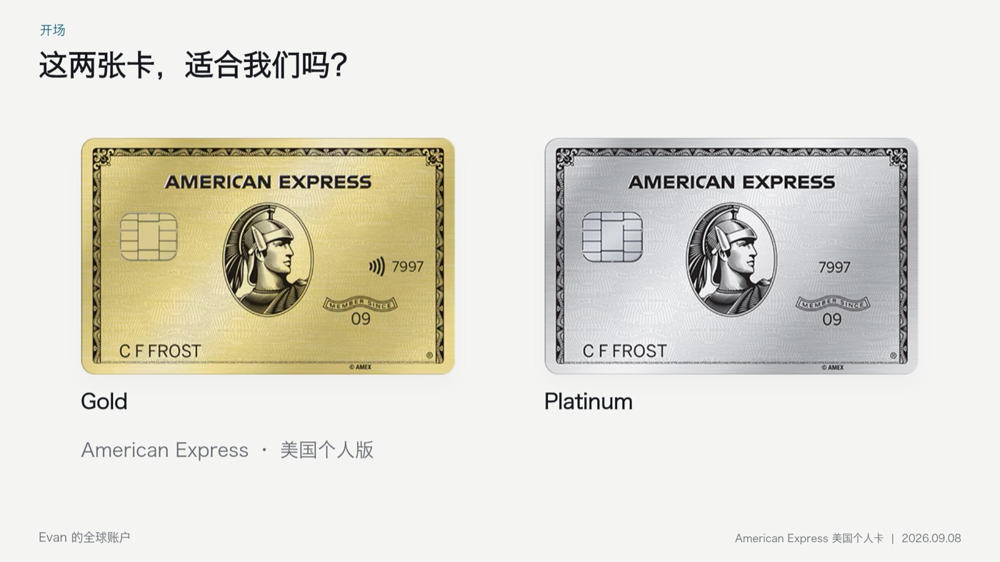
先看年费，也先看发行地区
美国运通金卡当前年费是 325 美元，白金卡是 895 美元。它们都是美国发行的个人卡。国内银行发行的运通卡即使名称和标志相似，也不能把两边的年费、积分和权益混在一起计算。
人在国内，偶尔去美国或其他国家旅行时，账面价值不是最重要的起点。更实用的问题是：一年会在哪里消费、会旅行几次、哪些优惠本来就会使用，以及哪些积分真的知道如何兑换。
查看美国运通金卡当前官方信息 · 查看美国运通白金卡当前官方信息
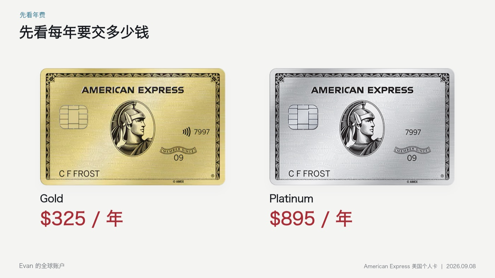
没有预设消费额度，不等于可以随便刷
两张卡都写有 No Preset Spending Limit，也就是没有预设消费额度。这不等于无限额度，更不代表可以把卡当成一笔随时可用的额外收入。
美国运通仍会根据购买金额、付款记录、账户历史和信用情况动态判断可用的购买能力，在部分情况下也可能为账户设置具体限额。消费必须建立在自己能够按时偿还的范围内。
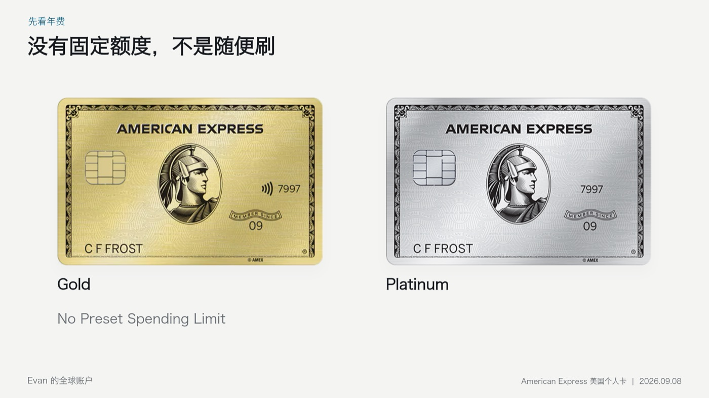
金卡：先看餐饮积分，再看积分怎么用
Gold Card 最醒目的奖励是餐厅消费 4X Membership Rewards 积分。官网当前写明，全球餐厅每个日历年最多 50,000 美元符合条件的消费获得 4X，超过部分为 1X。这个类别并不只限美国餐厅。
旁边的超市 4X 则明确限定为美国超市，每个日历年最多 25,000 美元，超过后为 1X。人在国内买菜或逛超市，不能直接照着美国超市 4X 计算。
即使店里能刷卡，也不代表一定获得餐厅 4X。奖励依赖商户向美国运通提交的类别信息；经过第三方支付或不同收单通道后，最终类别可能与我们对商户的理解不同。长期使用前，应该根据实际入账记录确认获得了多少积分。
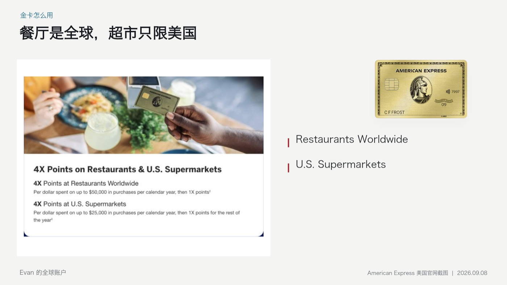
4X 积分不是 4% 现金
如果一笔 1,000 美元餐厅消费完全符合 4X 条件，可以获得 4,000 点 MR。但 MR 是积分，不是 40 美元现金，最终价值取决于兑换方式。
按美国运通当前列出的普通 Cover Your Charges 抵扣合资格账单示例，每点约 0.6 美分，4,000 点约能抵 24 美元。这笔消费按这种兑换方式计算，回报约为 2.4%，而且还没有扣除年费。
积分也可以通过 Amex Travel 使用，或转到符合条件的航空和酒店伙伴。某些兑换可能得到更高价值，但需要考虑兑换名额、税费、转点比例和自己的行程。先确定自己会怎么用积分，再判断 4X 对自己值多少钱。
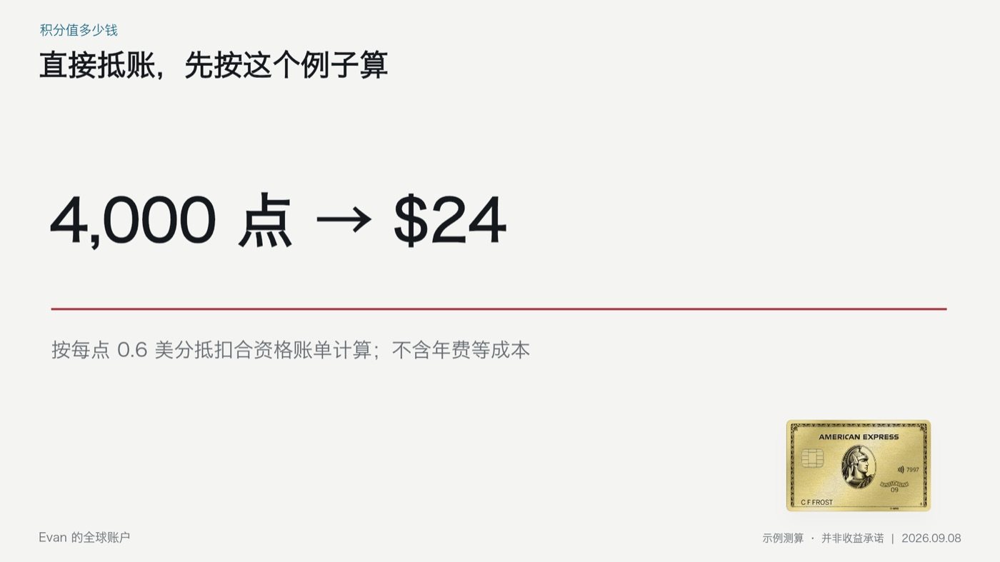
金卡的四项常见优惠，人在国内能用多少
美国本地的用卡介绍常把优惠金额全部加在一起，再和年费比较。但人在国内，生活习惯和使用地区不同，应该先判断这些支出是否本来就会发生。
| 优惠 | 账面年度上限 | 使用节奏 | 关键限制 |
|---|---|---|---|
| Uber Cash | $120 | 每月 $10 | 美国 Uber 行程或订单，并用 Amex 卡交易 |
| Dining Credit | $120 | 每月最高 $10 | 指定商户，需要登记 |
| Resy Credit | $100 | 半年各最高 $50 | 符合条件的美国 Resy 餐厅，需要登记 |
| Dunkin' Credit | $84 | 每月最高 $7 | 美国门店，需要登记 |
Uber Cash 不是办卡后直接获得 120 美元现金，而是每月分配且限定美国使用；Dining Credit 有指定商户；Resy 分上下半年；Dunkin' 则按月且限美国门店。一年只去美国一次时，多数月份可能无法自然使用。
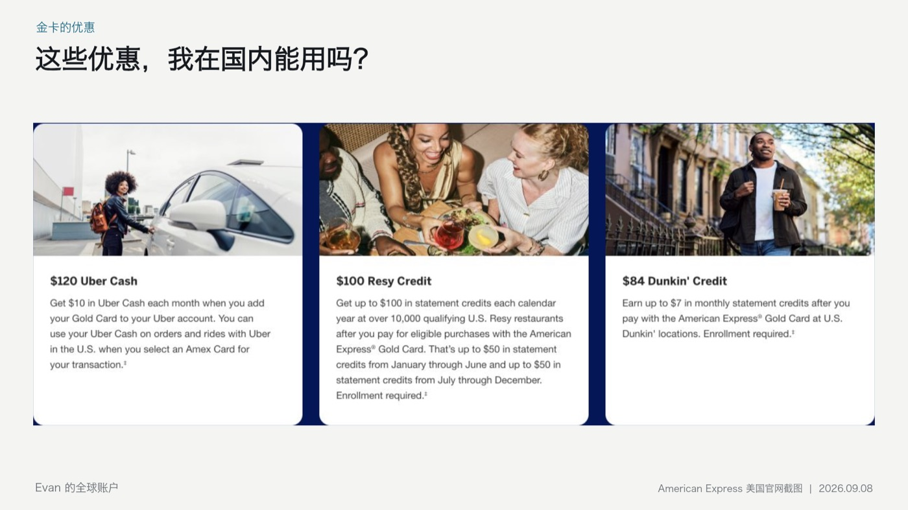
这四项账面上合计 424 美元，确实高于 325 美元年费。但没有自然用到的优惠，对个人价值就应先按零计算。为了使用额度而额外改变消费，可能反而增加总支出。
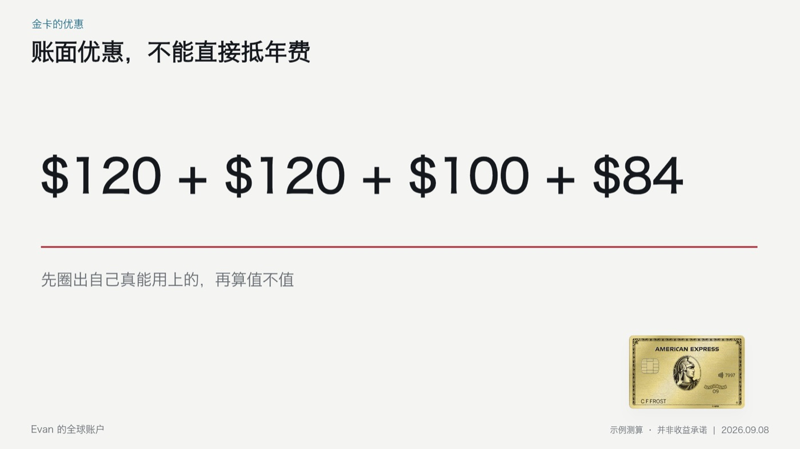
金卡再算一笔全年账
假设一年有 10,000 美元完全符合 4X 的餐厅消费，可获得 40,000 点 MR。如果全部按每点 0.6 美分抵扣合资格账单，约为 240 美元，仍没有覆盖 325 美元年费。
会自然使用优惠、会通过旅行或转点获得更高积分价值的人，结果可能不同。但不能只看到“4X”就得出这张卡一定划算的结论。
白金卡：重点从日常消费转向旅行
Platinum Card 并不是 Gold Card 所有消费的加强版。它更值得关注的是机票、指定酒店和机场里的旅行权益。
符合条件的机票如果直接向航空公司购买，或通过 American Express Travel 预订，每个日历年最多 500,000 美元的这类消费可获得 5X；预付酒店 5X 则需要通过 American Express Travel。其他符合条件的普通消费通常仍是 1X。
因此，不能把“旅行 5X”理解成所有订票订房渠道都能获得 5X，也不能因为年费更高，就认为国内日常买东西和订阅会自动获得更高积分。
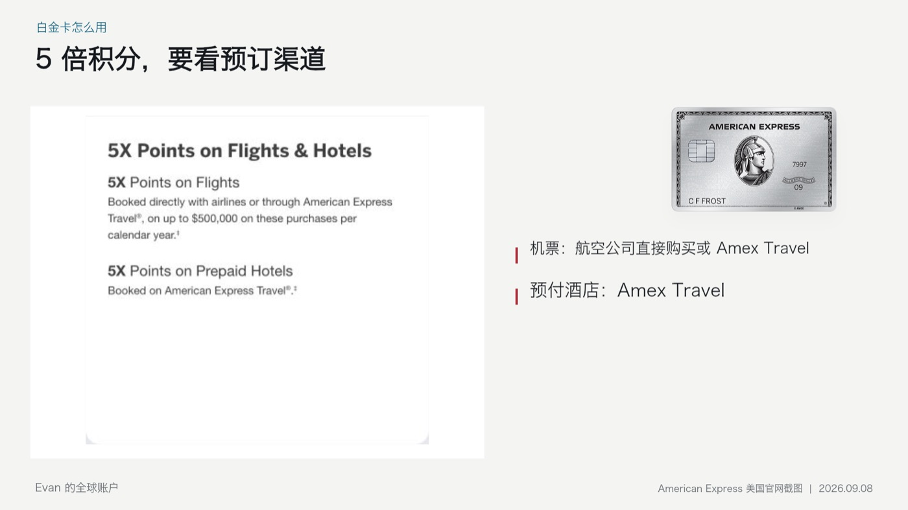
600 美元酒店优惠，要按半年和渠道计算
白金卡当前提供一年最高 600 美元酒店账单抵扣，1 月至 6 月最高 300 美元，7 月至 12 月再最高 300 美元。它不是任意酒店都能报销，也不能在一次普通订房中直接使用全年 600 美元。
符合条件的住宿必须通过 American Express Travel 预付，并属于 Fine Hotels + Resorts 或 The Hotel Collection。后者还要求至少住两晚。预订前需要确认酒店范围、预付方式、入住要求和实际价格。
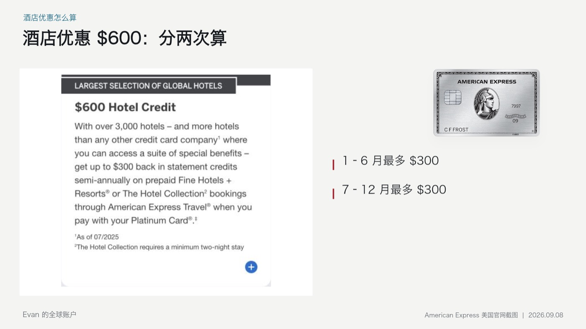
一个假设的订房例子
假设这半年的 300 美元额度尚未使用，一笔 500 美元的酒店订单完全符合条件。300 美元账单抵扣到账后，表面上自己承担 200 美元。
但价值计算还没有结束。如果同一房间、日期、税费和取消条件在其他平台原本只需 350 美元，那么与原本会支付的价格相比，真实少花的是 150 美元，而不是 300 美元。
酒店额度有没有价值，应该和自己原本会选择的住宿总价比较，而不是只看账单返了多少。
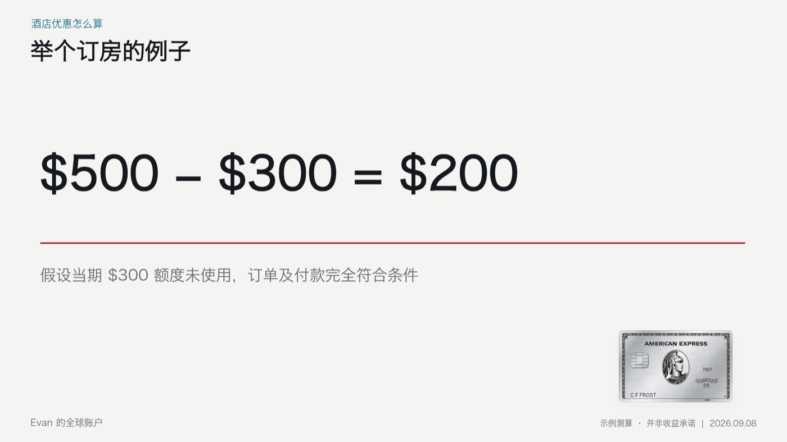
机场休息室：先查常飞的机场与航站楼
白金卡的 Global Lounge Collection 包含 Centurion Lounge、需要登记的 Priority Pass，以及其他符合条件的合作休息室。权益范围看起来很大，但个人价值取决于实际路线。
我会先检查自己常飞的机场与航站楼是否有方便进入的休息室，再看航班条件、开放时间、进入次数和同行者费用。一年经常飞、原本就会购买休息室服务的人，价值可能很高；一年只旅行一两次，或原本不会为休息室付费，就不应把官网估值全部算成自己的节省。
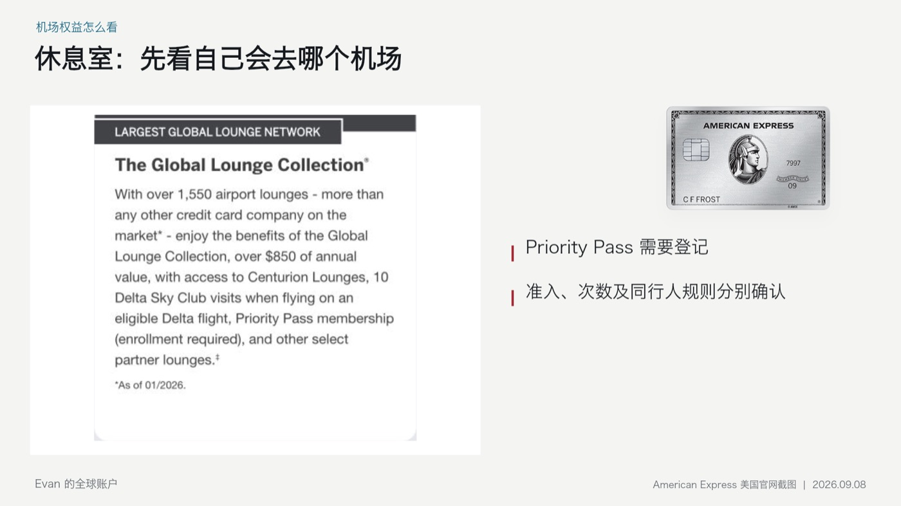
美国本地优惠，不能只看品牌名字
lululemon 优惠有美国地区限制
白金卡当前的 lululemon 优惠一年最高 300 美元，按季度最高 75 美元，需要登记，并限定美国符合条件的门店和官网。国内也有 lululemon，不代表在国内门店付款就符合这项优惠。
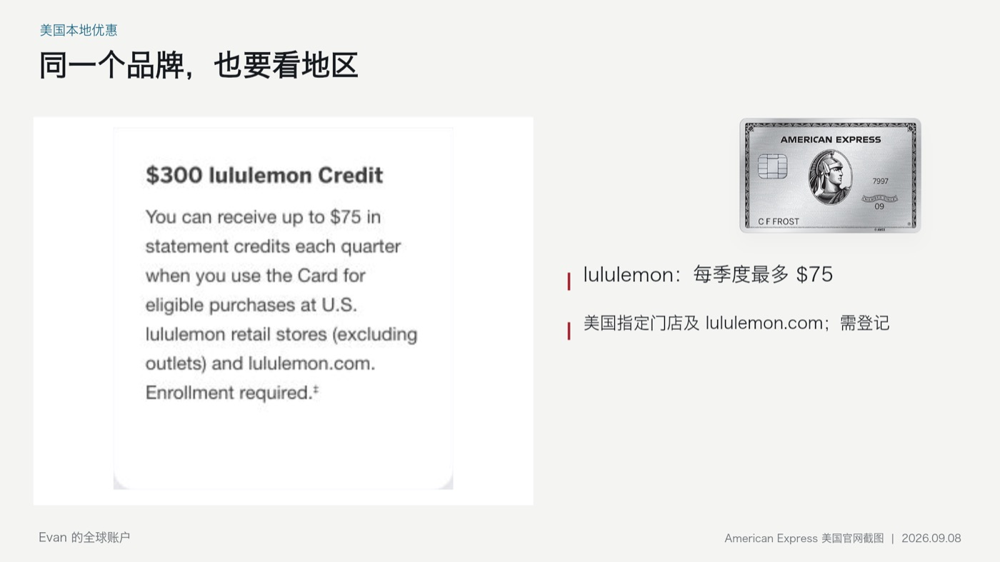
航空杂费优惠不是通用机票券
白金卡还有每年最高 200 美元航空杂费账单抵扣。持卡人需要先选择一家符合条件的航空公司，用途针对符合要求的行李费等杂费，并不是一张可以购买任意机票的 200 美元代金券。
这再次说明，判断一项优惠时，具体花的是什么钱与金额同样重要。
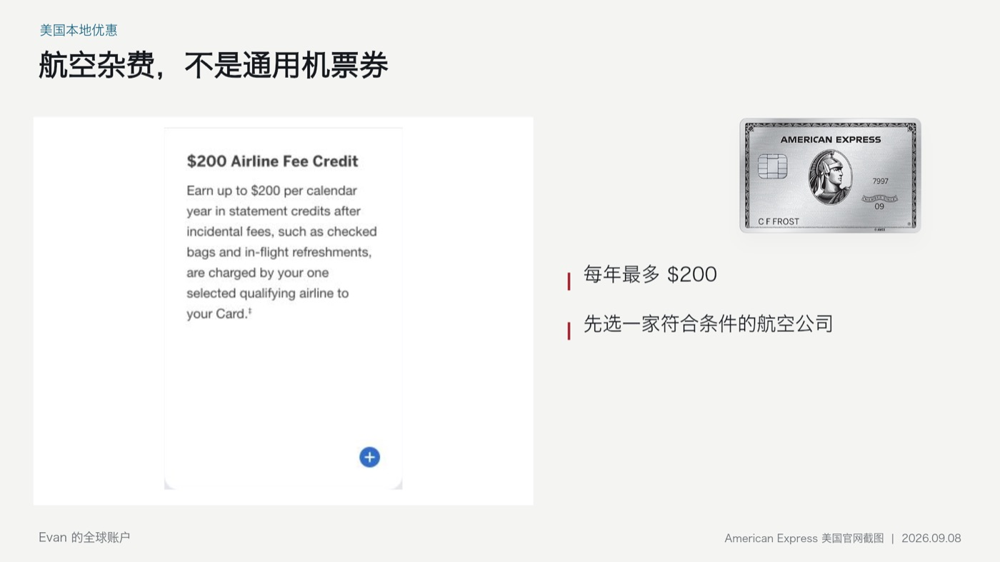
把用不到的优惠拿掉，再比较两张卡
| 比较项目 | Gold Card | Platinum Card |
|---|---|---|
| 当前年费 | $325 | $895 |
| 核心判断 | 餐厅积分与积分兑换方式 | 原本就有的旅行、酒店与机场需求 |
| 国内使用难点 | 超市限美国，支付通道可能影响餐厅类别 | 多项生活优惠限美国，酒店与机票有渠道要求 |
| 更适合关注的人 | 合资格餐饮消费较多，并会使用 MR | 本来就经常旅行，并能自然使用指定权益 |
Gold Card 主要看有多少消费真的能获得餐厅积分，以及 MR 最后怎样使用。Platinum Card 主要看本来就有多少旅行计划，是否会住指定酒店、经过适合的机场，并自然使用相关权益。
如果原本住普通酒店，为了消耗优惠才换到更贵的酒店；或者为了使用美国本地额度额外安排消费，总支出可能反而增加。好看的卡很多，合适的才值得长期保留。
开卡奖励和长期持有，要分成两笔账
开卡奖励值得关注，但第一年的奖励与之后每年是否值得持有，是两个不同问题。申请前应查看自己的实际 offer、奖励资格、消费要求和时间范围。
只把正常就会发生、并且能够按时偿还的消费纳入计划。不要为了完成奖励要求，给自己增加不需要的支出，也不要把开卡奖励当成以后每年都会重复获得的收益。
我的看法
对我来说，现在手里的 Capital One 已经能完成不少日常支付。下一张卡，我会先看它具体能帮我节省哪一笔原本就会发生的钱。
金卡和白金卡可以先了解，也可以等消费结构、积分用途和旅行安排更合适后再决定。人在国内时，不需要急着在两张卡之间做选择。先想清楚一年在哪里消费、出几次门，以及哪些优惠能够顺手用上，答案通常就会清楚很多。
免责声明：本文仅为 Evan 的个人经验、公开信息整理和假设测算，不构成金融、税务或法律建议，也不保证申请、奖励、积分价值或权益结果。示例未计利息、跨境资金成本及其他费用；请以美国运通官网、申请页面与本人最终账户条款为准。
前后篇
上一篇：Capital One 信用卡到底怎么选？八张免境外手续费的个人卡讲清楚